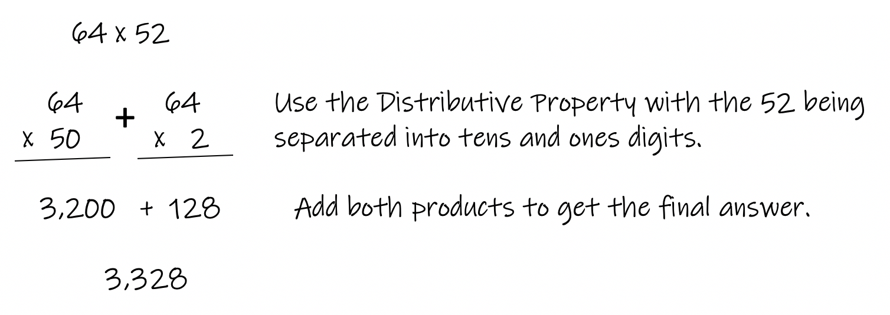
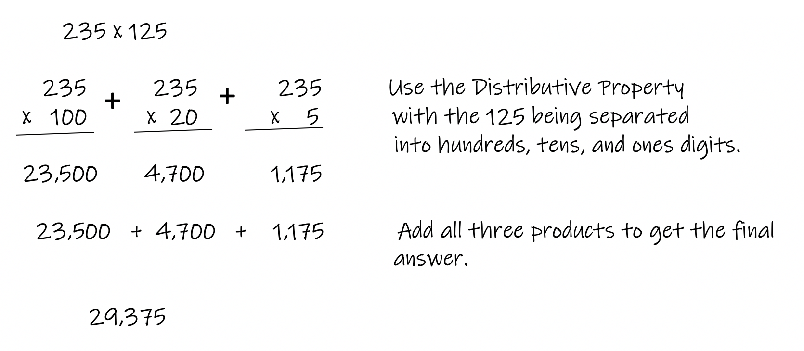
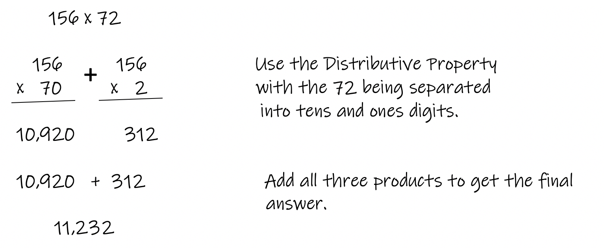

Multiplying integers (positive or negative whole numbers) is an important skill to have in order to be successful in math. The pie chart for the sign of the answer will apply to this type of problem when necessary (if one or both numbers are negative).
The Distributive Property is used in this module to help multiply easier and faster. A similar approach will be used when multiplying and dividing decimals.
Example 1: Multiply 23 x 42
Example 2: Multiply 46 x 51
Example 3: Multiply 126 x 33
Example 4: Multiply 64 x 52 
Example 5: Multiply 223 x 47
Example 6: Multiply 345 x 26
Example 7: Multiply 125 x 235
Example 8: Multiply 235 x 125  Notice examples 7 and 8 are the same problem, just with the values reversed. So it is up to you to decide which number comes first or second. You'll get the same answer. It is easiest to put the smaller number second.
Example 9: Multiply 156 x 72 
Example 10: Multiply 452 x 63